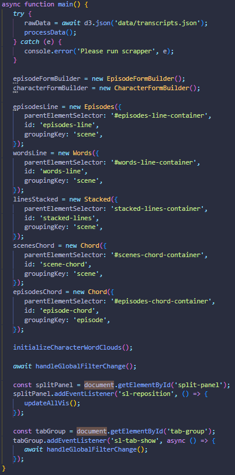
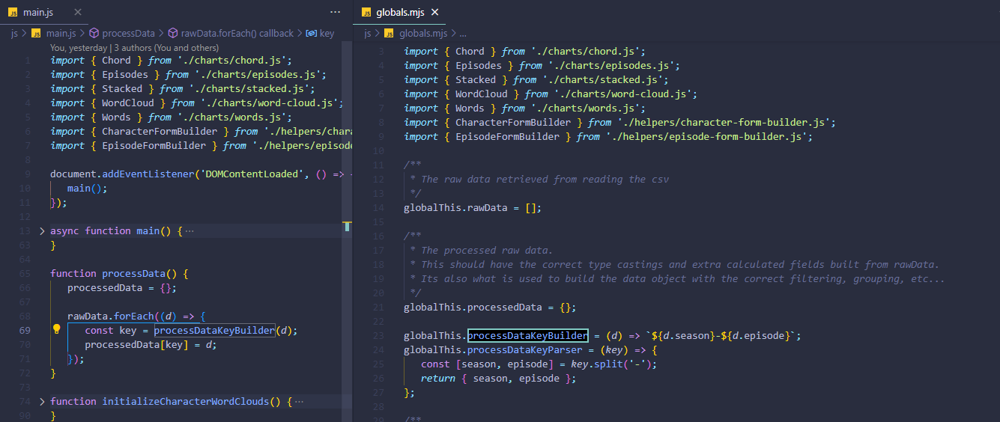
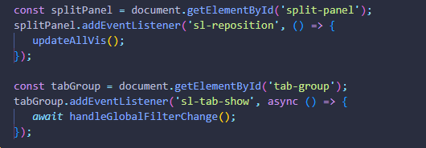
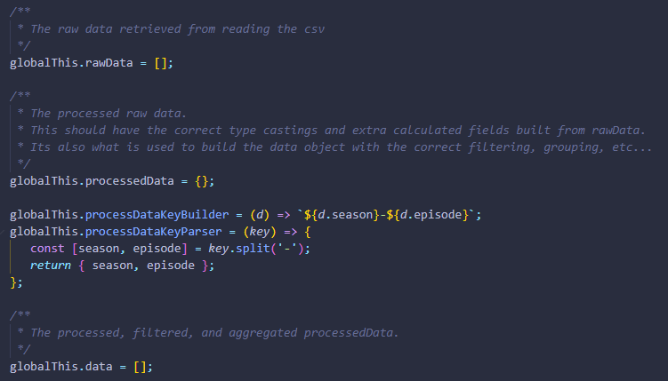
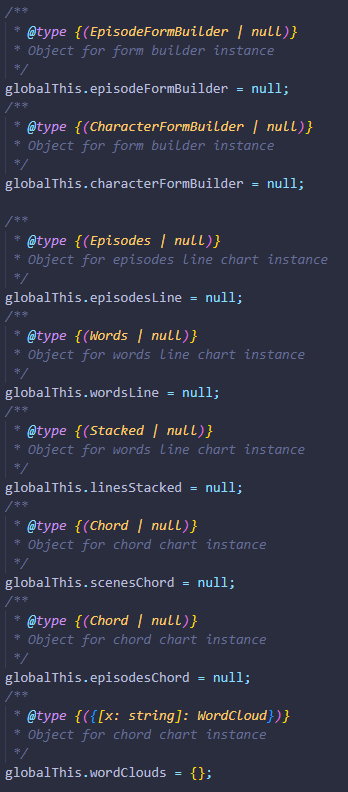
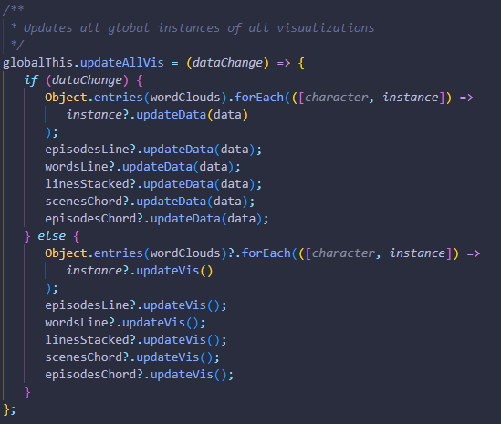

Project 3 -
By Devin Harris, Alex Yang, and Kody Penn

...

...

...

...

...
example

example 2

For libraries we used d3js, d3-cloud, and shoelace. d3 was mainly used in building the chord and line charts. d3-cloud was specifically for generating the word cloud. Shoelace was an interesting webcomponent based library for building our control and layout menus. It gave us some more interesting UI elements to work with and made it easier to select certain subselections of episodes/characters and change the size of the viewable graphs.
First our main function collects all the data from the csv, processes said data, then initializes all the charts and event listeners.
The processData function loops over all the rawData from the csv and does some type casting and build some calculated fields like the totd, season, year, month, hour, and other fields we are interested in visualizing.
The eventListeners in this case are for when the timeline is collapsed, the bar chart sections hideFrequencyCategoriesWithoutData toggle is changed, and when the clear selections button is clicked.
We also had a globals file that stored all global variables that would be shared across different chart types. These variables include the rawData from the csv, the processedData which is the rawData with calculated fields and type casting, then the actual data which is the filtered down version of the processedData based on brush selections.
We also had global variables for all the chart instances. This makes it easier to access any chart from anywhere in the code and makes it especially easy to trigger updateVis method from other chart interactions.
Finally, there were also a few helper functions defined globally. The main two of note are the updateAllVis and handleGlobalFilterChange. These functions handle calling the updateVis/updateData on all the charts, and applying new filtering logic to the processedData to send to the chart instances on some brush selections or timeline change. Another interesting concept is debouncing the handleGlobalFilterChange. Because all the charts call this, making sure frequent potentially duplicated calls dont trigger unessecary processing, a debounce was implemented to basically wait 50ms after a call to this method is made and if no new call is made in that time it does the processing.
Of course there are lots of more interesting areas, such as the chart implementations themselves and how the timeline plays on a setInterval, but I will leave that for you to investigate in our sourcecode!
You can access the source code here and run it simply in VSCode with the live preview extension on the index.html file. You can also see the live version here.
Devin Harris: Site Layout (Episodes/Character Selectors, Tabbed Content), Chord Graphs
Kody Penn:
Alex Yang: